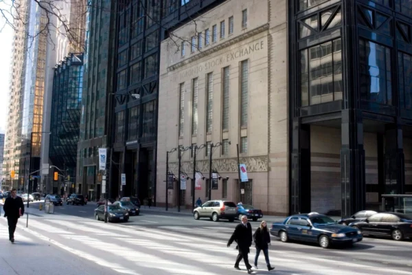

作者：汤姆．奇特龙（Tom Czitron）/翻译：李平

多伦多证交所（TSX）指数表现一直落后于美股指数，加拿大人会更担心加国经济。图为多伦多金融中心Bay街。（Chris Young/加通社） 【2024年08月09日讯】全球经济动荡，充满太多不确定性，继最近华尔街股市暴跌后，亚洲股市8 月 5 日也跟着暴跌，日经225指数（Nikkei 225）一个交易日内就暴跌13.5%。随之，欧洲和北美股市开盘后，也遭遇大幅下跌，只是跌幅远不及亚股。很显然，暗流在涌动，世界正处于动荡期。人们不禁要问：股市是否迎来熊市？人们长期担心的全球经济大衰退是否来临？情况会变得多糟糕？多伦多证交所（TSX）指数表现一直落后于美股指数，作为加拿大人会更担心。
大衰退和熊市正在到来
加拿大官方经济数据长期停滞，普通加拿大人生活水平急剧下降，收入停滞不前，食品和住房等必需品价格飞涨。如果全球股市进入熊市，全球经济大衰退，加拿大也不会独善其身，也会进入大衰退/萧条。
美国收益率曲线（十年期和两年期国债利差）已倒挂近两年，表明经济衰退无误，只是还需时间。经济衰退长时间延迟不奇怪，这是因为，自2008年以来经过多年人为操控低利率，美国房主和公司等长期借款人均锁定低利率，债务平均到期期限也很长。低成本债务到期并被高成本债务取代，需要时间。
政府官员、专家和各种自利股票推销员信誓旦旦地称，这次情况不同。但十年期和两年期利差恢复正数时，通常就是衰退开始之际。现在似乎就是这种情况，利差几乎没有倒挂，日趋正数，警示着衰退和熊市。
最近除互联网科技股暴跌78%外，仅巴菲特指标（Buffett Indicator）和席勒市盈率（Shiller P/E）处于世纪高位，进一步加剧熊市担忧。有趣的是，巴菲特一直在抛售股票套现，说明他也在密切关注自己的指标。想想看，目前市场甚至比1929年10月还昂贵，后果不言而喻。
波动率指数（VIX）定义的标准普尔指数波动性也令人担忧，从7月中旬的12点多的低点，一下子飙升至目前的28点多，在当前市场下跌背景下，预示着未来股市艰难。
高估值加剧投资者风险，加拿大人也不能幸免。大多数投资都是国际多元化，因加拿大近年政策环境不利投资，大型国际基金经理多半会先抛售加股。此外，从加美两国目前收益率和通胀前景看，加元被高估，不仅外国投资组合经理会看到这点，加拿大投资者也可能想要增加美国国债投资。
另一个可靠经济指标是铜价。制造业广泛用到铜，但投资新手多忽视铜价重要性。铜价今年5月份达到5元多峰值后，目前已跌至近4元，跌幅高达20%。
时局反常 坐等静观上上策
然而，仍有部分指标还不算太悲观。公司债券利差虽扩大，但幅度不大。公司债券价格骤然暴跌，通常与严重的熊市和经济衰退如影随行。此外，在当前通常会伴随抛售的“避险”交易中， 美国长期国债收益率并未下跌。
是债券投资者旗下对了，还是在打瞌睡？这一现象相当反常。美联储下次政策会议似乎铁定要降息，而且很可能降0.50%，而不是通常的 0.25%。冷静分析这些数据，很有可能正走向熊市。从历史上看，巴菲特指标和席勒市盈率显示这种高水平超买时，市场早已进入连续数年的实际回报负数时期。
数据表明，未来全球经济将面临艰难时期，甚至在COVID疫情封锁之前就已开始。加拿大投资者应坚守安全投资，集中资本保值。尤其是考虑到加元风险，美国国债始终是个不错的避险投资。
要避免探底和“趁低”买入心态。当前环境下，这么做，无异于想要接住一把飞快下落的刀。囤积现金，坐等静观才是上策。风暴最终会结束，手头现金充裕的，才能真正低价买入。
作者简介：
汤姆．奇特龙（Tom Czitron）是加拿大前投资组合经理，拥有超过40年的投资经验，在固定收益和资产组合策略方面的经验尤为丰富。他是加拿大RBC银行主要债券基金的前首席经理。
原文Global Market Turmoil: Canadian Investors Brace for Economic Storm刊载于英文。
本文仅表达作者观点，并不一定反映《时报》的观点。◇
责任编辑：文芳